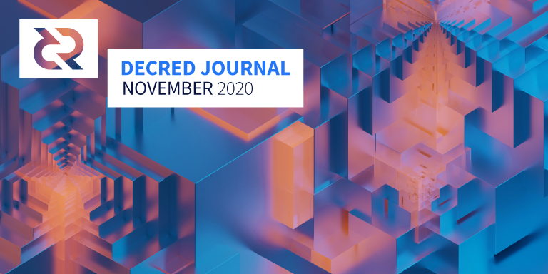

Decred月报 – 2020年11月

图片: @saender
十一月热门:
- v1.6 经过了4个候选版本的测试，进行了许多bug修复和用户体验的改进后暂时没有发现其它问题，这也意味着即将发布正式版本。
- dcrdex发布了修补程序，其中包含重要的案例修复程序以及对下一个版本的UI和后端改进。
- 用于继续开发移动钱包的资金和一个新的GoDCR PC钱包提案已经获得批准，用于GoDCR的资金还包括赞助用于接口的Gio库。
- 已经有四个VSP服务商进行了vspd升级，用以支持在Decrediton v1.6中提供的新的无注册帐户选票购买和匿名选票购买。
v1.6 候选版本4
新的v1.6 候选版本4修复了许多前三个版本发现的bug。在此处获取最新的RC二进制文件（单击Assets），并确保对其进行验证。
感谢每个帮助测试的人让我们史诗般的 v1.6正式版得以尽快发布。
开发进展总结
除非另有说明，否则此处报告的工作仅限为“合并到主核心存储库”状态。这意味着这项工作已经完成、审查并集成到高级用户可以构建和运行的源代码中，但对于普通用户来说，还不能使用。
去中心化国库支付共识规则已在测试网上激活，激活过程没有任何问题。
合并到主存储库（朝v1.7迈进）并反向移植到v1.6版本分支：
- 限制内存池不能追踪太多未确认交易的统计信息。这样可以避免发生复杂性攻击的可能性，并加快了未确认交易的区块模板的生成。
- 更正了RPC命令中的国库投票状态处理
- 在某些RPC命令的输出中添加了新字段，以指示国库基础和国库支出输入（资金来自新国库）并更新了文档
- 修复了在测试网上发现的国库代码中的同步问题
- 生成RPC证书的默认曲线更改为P-256，因为Chromium（由Decrediton使用）取消了对更强P-521的支持。
其它合并：
- 对所有常规发送使用随机硬币选择
- 保存未发布的VSP费用交易，以防止在重新启动钱包期间产生双花
- 沿VSP费用地址请求发送选票的父交易（以更快地注册选票，VSP需要知道选票的输出资金，这通常来自同一区块中开采的“拆分交易”，但并不总是被即时可见） VSP）
- 为了避免在混币帐户中使用未混币的更改，请使用正确的更改帐户支付VSP费用，以防止混币帐户使用未混币的更改（没有隐私泄漏，因为尚未发布混币VSPStaking，solo隐私购票没有这样的问题）
- 最大VSP费用可配置
- bug修复和文档更新
- 更新Trezor固件（迈向Trezor买票支持的一步）
- 按照更新的设计，隐私标签页经过重新设计以简化操作
- 帮助页面介绍了隐私功能
- 在“隐私”标签页上显示日志
- 允许从混币账户以外的其它账户发送交易的能力
- 显示混合交易的过滤器
- 修复了隐私钱包的错误
- 根据批准或拒绝状态过滤完成投票的提案
- 在执行某些操作时不允许关闭Decrediton
- AppImage打包，其中Decrediton作为单个可执行文件出现（作为副作用，这使GNOME用户避免了必须通过命令行启动它）
- 删除了最大钱包数量限制
- 更新中文翻译
- 增加了阿拉伯语，意大利语和波兰语的部分新翻译
- 许多UI调整
10月修复了约60个bug，11月修复了约65个bug。Decrediton功能的清单越来越多，需要更多的测试。非常感谢帮助改进Decrediton的所有测试人员！
进行中：
CMS:
- 跟踪GitHub开发活动统计信息的基础架构，将用于确保开发人员的进度与其计费时间相符
- 发票页面上过去发票和GitHub贡献的统计信息，以帮助管理员进行审阅
- 多种修复
进行中：
- 前端支持TOTP登录
- 不拒绝具有无效投票选择的选票（这是可取的，这样可以在客户端或服务器不是最新时，不停止票证的注册，在此进行说明）
- 在费用地址请求中接受可选的父交易（请参见上面的dcrwallet部分）
- bug修复和代码清除
- 完成Postgres实施。现在，所有数据库测试都针对Bolt和Postgres运行。BoltDB由于是嵌入式键/值数据库，因此仅允许部署dcrpool的单个实例。使用Postgres，可以针对同一个Postgres数据库部署多个dcrpool实例。
- 提取错误包以支持将数据库提取到其自己的包中
- bug修复和代码清除
10月份从上游版本0.11.1移植变更，其中包括对两个 漏洞的修复，这些漏洞可能导致资金损失。发现者的更多背景在这里和这里。
建议升级到最新的dcrlnd主或候选标记。
修补程序v0.1.3已发布，修复了可能的客户端挂起和一些较小的问题。二进制文件作为v1.6 RC4的一部分提供。
合并在主存储库中：
- 模态对话框上的关闭按钮
- 订单明细页上的确认计数
- 批量赎回交易可能节省一些交易费用
- 订单撤销时的可见通知
- 更多的图表交互性（在深度图上突出显示悬停的订单等等）
- TUI已删除 （：终端生命形式滴下了些许泪水：）
- 区块链同步时不允许交易
- 异步运行合约审核以不阻止传入消息和其他交易活动
- 改善关机顺序
- 避免钱包锁定错误
- 优化订单簿的内存使用
- 新用户和具有良好掉期历史的用户的可配置手数限制
- 管理功能以检索市场数据
- 更快，更丰富的测试工具
- 带有可自定义“程序”的负载测试机器人，以向系统施加压力
- dexc Dockerized
- DEX客户端的RPC协议的规范，以帮助除dexctl之外的其他程序（例如Decrediton）使用DEX客户端
- 修复了几种边缘情况
合并了来自6个贡献者的37个PR ，添加了7K行代码并删除了4K行代码。
进行中：
合并到dcrlibwallet共享库中：
进行中：
- 法语 翻译
- bug修复和用户界面调整
进行中：
进行中：
- 市场页面的bug修复
- 新闻稿转换为单独的页面
- 内容更新
其它：
- 发布 工具进行了大量升级，自动化发布过程
人员
欢迎新到来的首次贡献者，他们的代码已合并到主代码库中： @HlloWrld (dcrweb).
截至12月1日的社区统计数据：
- Twitter 粉丝: 40,897 (+79)
- Reddit 订阅: 9,982 (+45)
- Matrix #general 用户: 253 (+31)
- Discord 用户: 1,501
- Telegram 用户: 2,339 (-55)
- YouTube 订阅: 4,250 (+40), 观看量: 162K (+3K)
- LinkedIn 粉丝: 932 (+8)
- GitHub dcrd 星: 567 (+1), 叉: 246 (+0)
治理
十月国库收到11975 DCR，花费13846 DCR。按照9月份的每日平均DCR/USD汇率18.19美元计算，这是21.8万美元的收入和25.2万美元的支出。按10月平均汇率12.01美元计算，当月完成工程的美元账单金额为16.6万美元。截至12月4日，社区开发基金余额为636385 DCR（1640万美元，25.69美元）。
10月发布了4项建议，其中3项已被批准，1项已被放弃。
- 来自@raedah的GoDCR提案要求预算为6万美元，以使用Gio库进一步开发（8个月）Go-native桌面钱包。该提案包括每月$ 1,000的Gio赞助，GoDCR已成为该项目的先驱。批准获得92％的支持和38％的投票率。
- @raedah提出的相关移动钱包提案要求$ 44K，用于在Android和iOS钱包上再工作8个月。移动钱包和GoDCR都共享dcrlibwallet组件，该组件允许所有三个组件访问添加到该组件的新功能。获得93％的支持和38％的投票率。
- 一个提案来自@joegruff进一步制定Decred地址扫描Android应用程序请求已经完成的工作，$ 3,000（应用程序已经开源，并在谷歌Play商店一年）和$ 6000名最大的必要的更新和新功能。出于评论的普遍需求，Joe同意添加紧凑的过滤器支持以提高隐私性，甚至在需要时可以自愿工作（因为使用此功能编辑提案为时已晚）。投票很紧张，因为大多数情况下支持率保持在60％以下，但最终提案以67％的支持和34％的投票率获得批准。
- 一个提案来自@paris_smithson到基金的艺术品的生产和销售为WhyDecred.com最初请求$ 16,800到基金16件作品，被编辑由$ 10K（至$ 6,800个），前最终被抛弃的想法，该网站将完成下降请求在提交另一个提案之前。
《Politeia Digest》第39期提供了有关本月提案的更多详细信息。
decredcommunity/proposals存储库已经过重组，以保持结构的一致性。回购协议当前包含13个投标的52个更新。请提交建议，因为它有助于将建议收集到一个地方（与在聊天室和Reddit中进行搜索相比）并防止丢失。（如果您不想独自面对GitHub，请召唤@bee）
网络
全网算力: 11月哈希率 以226 Ph/s开启并以 293 Ph/s结束。月内，最低为215 Ph/s，峰值为566 Ph/s。哈希率分布 截至11月1日：UUPool 44%, Poolin 35%, easy2mine 13%, Huobipool 2.6%, Antpool 2%, F2Pool 1.6%, BTC.com 1.2%, Luxor 1%, CoinMine 0.02%.
Staking: 30天平均票价为 158.66 DCR (+6.96). 票价139.3-188.9 DCR之间变化。锁定金额为609-661万DCR，相当于参与PoS的可用供应量的49.88-53.64%。
选票价格再次达到188.85 DCR的新高，而Staking参与（DCR锁定在门票中）达到了历史新高53.6％。
节点: 整个11月份，每个dcr.farm平均有114个公共侦听节点，总共166个节点。11月的平均版本分布：dcrd v1.5.2、28％dcrd v1.5.1、13％dcrd v1.6开发版本，5％dcrd v1.5.0、3.4％dcrd v1.7开发版本，3％dcrd v1。 5个开发和RC版本，1.1％dcrd v1.4、12％dcrwallet v1.5.1、2.5％dcrwallet v1.6开发和RC版本，1.3％dcrwallet v1.5、0.8％dcrwallet v1.4、9％其他。
其它新闻中：
- Decred网络已处理了500,000个区块！
- 有一个新的 @CoinShuffle_BOT帐户通报Decred的每日混币统计信息
- Coin Metrics的财富分布研究发现，按其网络分布因子度量，Decred在比特币之后仅次于比特币（注意：NDF基于地址，许多地址可能由同一个人控制，请在此处进行讨论）
整合
欢迎新vsp.decredcommunity.org运行新VSPD软件的主网选票托管服务。在撰写本文时，它有70张现场选票和30张已投票的票。
现有提供商 decredbrasil.com, 99split.com, 和 stakeminer.com除了在decred.org/vsp 中列出的现有dcrstakepool服务器之外，还都启动了vspd实例。
在撰写本文时，我们总共有5种主网vspd服务可供选择。谢谢大家支持以更私密的方式进行抵押。
Stakey.net VSP现在在Mastodon上发布状态和支持更新。
Staked宣布其Decred VSP的关闭缺乏经济可行性。截至12月8日，该网站上仍显示Decred ，VSP的统计信息页面显示133个活跃用户，308个总用户和31张实时门票。
Hotbit Korea宣布将于11月26日在DCR / KRW市场上市。
警告：Decred Journal的作者不了解上述任何服务的可信赖性。在将您的个人信息或资产信任给任何实体之前，请先进行自己的研究。
采用
VotoLegal使用dcrtime记录并为巴西2020年市政选举活动捐赠。据Geek Insider，超过24K的捐款已追踪总额超过$ 600K
外展活动
为了应对传播内容和新闻的长期挑战，@ Exitus和其他人已经在Telegram中组建了一个营销工作组来帮助协调：
迄今为止，已证明这是一种生产力和积极力量。如果有人想参与并增加价值，请与我联系。
Stakey.net VSP为支持帐户启动的Mastodon服务器通过此邀请链接向Decred社区开放。Mastodon是Twitter的一种开源，自托管的微博替代品，并且是Fediverse的一部分。
Decred现在在gioui.org上被列为赞助商。
以西班牙语发表的第二份提案的活动和费用第5个月度报告已于12月结束。出版了一份涵盖6月至12月的重大最终报告以及第3项提案，以继续努力。
区块链学习挑战赛（由Decred在西班牙和Talent Land Network共同组织）有6个项目进入了决赛。参与者在GitHub上发布了源代码，并以简短的视频演示了他们的项目。5名法官对5个领域的每个项目进行了评分（使用了多少数据，如何使用Decred创意，与创意相关性如何，使用该应用程序有多容易，该应用程序的完成程度如何，以及文件的记录情况如何） 。决赛的摘要和所有的评分和链接都在这里，最终的颁奖视频在这里。
@ michae2xl发布了他11月份针对“巴西营销”提案的活动的报告。
Monde PR 11月份的成就：
- 创建并提出了一个故事的想法，以资助和加密出版物
- 回应了3条评论
- 获得2次媒体采访
Monde PR保证的新闻报道：
- @richardred出现在Hitechies播客中，谈论去中心化和DeFi的未来
- @ jy-p出现在加密对话播客中，谈论DCRDEX的发布
- Crypto Briefing中的一篇文章，重点介绍了@ jy-p对Decred在巴西大选中的使用的评论，并联合了6个新闻媒体，包括Coin Market Cap
- Cryptonomist中的一篇文章，重点介绍@ jy-p对Decred在巴西大选中的使用的评论，并联合了3个新闻媒体，包括[比特币以太坊新闻](https://ms.bitcoinethereumnews.com/blockchain/elections-in-brazil-donations-on-blockchain-the-cryptonomist/
- Geek Insider中的一篇文章，重点介绍@ jy-p对Decred在巴西大选中的使用的评论
- Blockchain Latino America上的一篇文章，重点介绍@ jy-p对Decred在巴西大选中的使用的评论
- Explica.co中有关Decred在巴西大选中使用的文章
- Cointelegraph中的一篇文章，收录了@ jy-p关于美国是加密货币最友好国家的评论，并联合了33个新闻媒体，包括Cointelegraph Italy和Investing.com
- Master of Nodes中的一篇文章，重点介绍@ jy-p对Decred在巴西大选中的使用的评论
- @lukebp出现在Digital Cash Network播客中，谈论Decred的治理模型
- Cointelegraph中的一篇文章，重点介绍@ jy-p对比特币的牛市和熊市周期的评论，并联合了17个新闻媒体，包括Cointelegraph德国，Cointelegraph巴西和Cointelegraph意大利
活动
参加：
- 11月2日 - Blockchain Summit Latam - 互联网。@elian在“公共协议中的治理”演讲中谈到了几个公共区块链之间的异同以及Decred如何从中脱颖而出。(视频)
- 11月5日 - Hablemos Decred 20 - 互联网。西班牙Cointelegraph的@elian和Fernando Quiros谈到了新闻业，传播业和广告业中区块链技术和加密货币的可能用例。(视频)
- 11月9日 - Talent Land Latinoamerica - 互联网。@ adcade，@ elian，@ francov_和@pablito谈到了“我们的金钱，我们的规则：抛弃本国货币”。(视频)
- 11月12日 - Hablemos Decred 21 - 互联网。与来宾Cristobal Pereira（LatAmTech首席执行官）一起回顾了Latam区块链峰会，并讨论了Latam生态系统的观点。(视频)
- 11月19日 - Hablemos Decred 22 - 互联网。邀请嘉宾华金·莫雷诺（Joaquin Moreno）一起讨论主题“购买比特币的公司，您准备好了吗？”。(视频)
- 11月19日 - University of El Salvador - 互联网。@adcade与经济学系的学生讨论了加密货币，Decred，治理和贡献机会。这是一个有2人参加的2小时会议，而有45人参加的会议延长到+1小时。
- 11月27日 - Hablemos Decred 23 - 互联网。来自Decred（西班牙语）的@caibarrad和来宾Felipe Montoya参加了会议，讨论了“ DLT”和加密货币之间的异同。(视频)
- 11月28日 - Partnership agreement with OMJD - 摩洛哥卡萨布兰卡。在7月与摩洛哥青年决策者组织（OMJD）举行在线聚会之后，@ arij与他们签署了为期2年的协议，以举办有关Decred和区块链技术的聚会，研讨会和会议，以造福年轻人。
西班牙Decred活动不断在西班牙语Cointelegraph上登出。
我们用作以上事件数据主数据源的事件存储库已使用新的“技术”进行了升级。现在，有关事件的关键信息被保存在（大多数是人类可读的）YAML文件中，并且与完整的报告相比，编写的散文要少得多。这样的结构使我们可以生成一个漂亮的网站，每个事件在此网站上都具有与其相关的所有链接。这应该有助于报告和知识共享。要列出您的活动，请按照以下步骤操作。
媒体
精选文章：
- @richardred(blockcommons.red)的Polkadot治理概述
- @richardred的Uniswap / SushiSwap治理概述(blockcommons.red)
影片：
- Decred双周报v1.6 和DEX最新进展 @Exitus (youtube)
- Decred双周报 开发进展概要 社区参与度 @Exitus (youtube)
- Decred - 混合区块链 Decred Society (youtube)
- Luke Powell谈数字现金网络 Decred治理，混合共识和新的去中心化国库 (youtube, odysee.com, anchor.fm)
- 对PermabullNiño(@PermabullNino)的采访 Staked Podcast (youtube)
- 对Le_Hibou_（@Frenchy_LeDegen）的采访 Staked Podcast (youtube)
- 对LOL DEFI（@loldefi）的采访 by Staked Podcast (youtube)
- 加密货币Convo-播客壮举的Eduardo Lima。DubDigital (youtube)
Staked Podcast的纯音频版本可在anchor.fm上获取。恭喜您获得1000次下载/流！
音频:
- Hitechies播客-Richard Red和Pramod Dhakalrr讨论了DeFi挑战，ETH，银行业，支付系统的未来等等。 (hitechies.com)
- 加密对话074-Decred DEX如何计划使用@ jy-p破坏加密交易市场 (bravenewcoin.com, youtube)
- Decred in Depth 33: Seth Simmons谈DCR + Monero隐私 (libsyn)
- Rough Consensus 12: 比特币已进入中国市场。伙计们与@POVCryptoPod和比特币杂志的共同主持人@ck_SNARKs一起讨论了比特币的采用，山寨币繁荣与萧条的教训，价格在加密货币领域的作用等等。 (libsyn)
- Rough Consensus 13: 数字自治与自由。蜘蛛侠与Frank Braun（@thefrankbraun）进行了广泛的对话，涉及范围包括：数码朋克数字社会，数字时代的隐私和自由，BTC，DCR，Scrit等在更光明的未来中的作用。 (libsyn)
艺术和段子:
- Decred DAO空间邀请海报由@Exitus
- Swiss Army Knife 的声音金钱@Checkmate
- Hidden Hydra预告片剪辑by @New_Copernicus
- 在Redbubble上 查看OfficialCrypto的商品设计（您知道Decred徽标与“ Real Defi ”完美匹配）吗？
翻译：
- 我如何学会停止担忧和爱Decred DEX - 西班牙语 @francov_
- 门罗币和Decred是新的比特币 - 西班牙语 @francov_
- cryptoassets的实用程序 - 西班牙语 @francov_
- 2020年10月的Decred Journal被翻译成阿拉伯语（@arij，@ abdulrahman4），中文（@Dominic），西班牙语（@francov_）和越南语（@duyenemdo）。越南读者还可以赶上八月的活动。谢谢大家的不懈努力！
- 如果您翻译Decred内容，请在#translations聊天室打个招呼。
社区讨论
精选的Reddit帖子：
- 前瞻性思考11月14日星期六开始时，建议选择“ Decred正在重新定价”作为新的叙述
- 创建多重签名地址
- u / oiezz等人的原创营销思想集合
- 为什么混淆选票是一个坏主意
- Miniscript，Minsc或RGB等高级脚本语言对Decred的适用性=
精选的Twitter讨论：
市场
11月DCR美元交易价格在11.71-24.78 USD / BTC交易价格 0.00086-0.00135之间。每日平均价格为$18.19。
TIE已证明DCR/USD攀升与30天平均推文量之间存在相关性。
在币安上观察到一个奇怪的恐慌峰值，降至0.00075 BTC 。
11月12日，@ jy-p 说到DEX总共交易了191K DCR。平均每天10 BTC。
那些希望在不安装任何内容的情况下窥视DCRDEX的人可以查看YouTube上的24/7直播。
相关外部信息
发现从根本上破坏了BSV Electrum钱包中P2SH的替代物，使任何人都可以将Bs链上以多重签名哈希保存的硬币花费掉。
Value DeFi协议被黑客盗取了700万美元，尽管攻击者出于未知原因将200万美元退还给了合同地址。该漏洞利用Flash借贷执行，在Value DeFi发推文（现已删除）不到24小时后，吹嘘“ Flash借贷攻击预防”的强大安全性。
OUSD稳定币遭到一笔用于进行再入攻击的快速贷款的黑客攻击，以打印和重置（降级）几乎相当于整个流通供应量的OUSD，从而使黑客能够提取700万美元的价值。
通过借入价值700万美元的MKR代币并在立即还清贷款之前对其进行投票，还利用了一笔快速贷款来开发MakerDAO的治理系统。MakerDAO的响应是禁用某些执行功能，以防攻击者能够访问它们，并延长冷静期，在此期间，社区可以应对意外的建议通过。如果要求MKR持有者锁定令牌一段时间以进行投票-或可借用的MKR数量少于合法参与治理系统的数量，则不会暴露这种弱点。
Schnorr签名和Taproot的软叉实现在10月被合并到Bitcoin Core，但是到目前为止，在网络上激活更改的方法尚未达成协议。还有一个不受欢迎的论点，即Taproot通过引入另一种地址方案，将使普通用户的比特币隐私状况更加恶化。Taproot将添加新的Schnorr签名类型，这将为多签名钱包提供更大的灵活性，并使这些交易看起来与常规交易相同。
以太坊2.0信标链存款合同于11月初发布，并于11月24日达到了目标540,000 ETH，最终的150,000 ETH将在12月1日启动截止日期前的几个小时内到来。信标链是启动和迁移到以太坊2.0的四个阶段中的第一阶段，以这种初始形式，链的唯一目的是确保PoS验证程序可以保持共识。
最新的Bitcoin Cash硬分叉发生在11月，这次争议的焦点是为ABC开发人员筹集资金。这场哈希战争显然是赢家，BCHN链（无开发资金）吸引了几乎所有的采矿能力。在分叉之前，观察到超过100万个生物安全信息交换所正在转移到交易所（出售有风险的资产和接收拆分硬币是这样做的两个常见原因）。
以太坊网络在11月11日经历了一次中断。最新版本的Geth节点软件默默地修复了一个休眠状态已超过一年的共识错误。由于更改了共识代码，因此存在意外硬分叉的风险。一家供应商独立发现了该错误，并看到大多数节点已升级，因此决定在生产中对其进行测试。看看会发生什么。令所有人惊讶的是，运行旧软件的少数节点中有Infura，Infura是流行的服务提供商，被“ dapps”用来与以太坊网络同步。触发漏洞的交易使Infura和依赖它的一堆“去中心化”财务应用程序停止了运行，包括Metamask，MakerDAO，Uniswap，Compound等。币安和其他交易所在注意到相互矛盾的交易历史后也暂停了交易。Infura在几个小时内解决了该问题，并发布了验尸报告，解释了为何不进行升级，并指出了无提示共识修复的危险。以太坊开发人员还发布了验尸报告对盖斯（Geth）的解释是，该修复程序是静默完成的，不会引起攻击者的不必要关注。除其他事项外，该事件还告诉我们，部署关键修复程序具有挑战性，因为这是在告知好角色而不通知坏角色之间的权衡。
阿拉贡项目是在过程退役记号的引入一年前的令牌“阿拉贡苑”，阿拉贡DAO的争议解决服务使用ANJ的。现在，ANJ代币被视为Aragon Court成功的障碍，将由ANT持有者通过向ANJ持有者发行约1-5％的通货膨胀而被买断。
美国当局没收了价值约10亿美元的69,370 BTC（和叉子），显然是在2013年从丝路窃取资金的一位不愿透露姓名的黑客的同意下进行的。
关于月报
这是Decred Journal的第32期。有关所有问题，镜像和翻译的索引，请参见这里。
在经过最少的健全性检查之后，来自第三方的大多数信息都会直接从来源中继。Decred Journal的作者无权验证所有声明。请当心诈骗，并自行进行调查。
您可以在此处提交内容，以供撰写下一期月报内容。我们随时欢迎您的反馈和贡献。
感谢 (字母排列):
- 写作和编辑: adcade, bee, degeri, elian, l1ndseymm, richardred
- 评论和反馈: davecgh, dnldd, jholdstock, JoeGruff, lukebp
- 封面图片: saender
- 资助： Decred国库
中文社区
- 社区网址
- 微博
- 微信公众号
- 中文电报群
- bilibili频道
- QQ群号-258412796